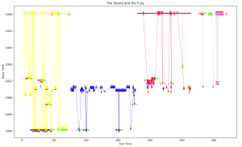
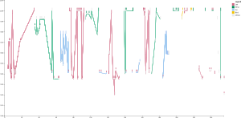
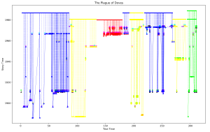
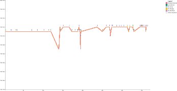
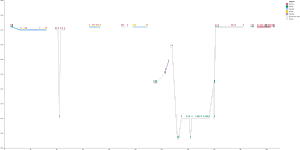

The Sound and the Fury
Time Graph
Narrative theorists have visualized Gerard Genette’s classic distinction between story and discourse1 by plotting points on a cartesian plane. Genette proposed a quasi-mathematical shorthand by suggesting we assign events that occur in the fictional storyworld a letter and the order those events appear in the text a number. Newman (2016, 2019)2 used this formula to create rough graphs by plotting story events on the Y-axis and the chapters they appear in on the X-axis. Nelles and Williams (2018, 2021)3 have honed this strategy by including more events and using page numbers rather than chapters. Kim et al. (2018)4 visualized non-linear films and used colours to indicate which characters participate in which events. Yeager (2023)5 demonstrates how we can take scale into account using textual cues for actual and relative time. This project adopts the general strategy pioneered by Newman and Nelles and Williams but, like Kim et al., includes representations characters in the visualization and, like Yeager, accounts for scale.
These time graphs are comprised of points, vertical bars, which each represents an event. The location of the point on the y-axis indicates when, in story time, that event takes place. The location of that point on the x-axis indicates the page number on which it was recounted. If an event was recounted more than once, it will have more than one point. By hovering over each point, you can see the name of the event, which characters participate, and who narrates it. The colour of the lines connecting the events represents the narrator who tells them, and the colours that comprise the point represents the characters who participate in it.
Time Graph

Time Graph

Time Graph

Time Graph

Time Graph

1Genette, Gerard. Narrative Discourse: An Essay in Method. 1972. Trans by Jane E. Lewin. Cornell University Press, 1980.
2 Newman, Daniel Aureliano.
Modernist Life Histories: Biological Theory and the Experimental Bildungsroman.
Edinburgh University Press, 2019.
---. “‘Education of an Amphibian’: Anachrony, Neoteny, and Bildung in Huxley’s Eyeless in Gaza.”
Twentieth Century Literature, vol. 62, no. 4, 2016, pp. 403–428.
3 Nelles, William and Linda Williams. "Narrative Order in the First-Person Novel."
Poetics Today, vol. 39, no. 1, 2018, pp. 131-158.
---. “Doing Hard Time: Narrative Order in Detective Fiction.” Style, vol. 55, no. 2, 2021, pp. 190-281.
4 Kim, Nam Wook et al. “Visualizing Nonlinear Narratives with Story Curves.” IEEE Transactions on Visualization and Computer Graphics, vol. 24, no. 1, 2018, pp. 595–604.
5 Yeager, Sean A. “Time Maps: Theory and Method.” Journal of Cultural Analytics, vol. 8, no. 3, 2023.